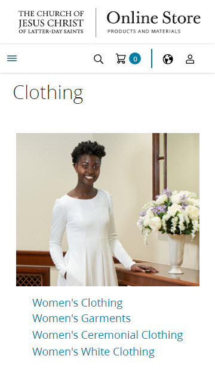

Hick's Law
Store Church of Jesus Christ
store.churchofjesuschrist.org The online store for The Church of Jesus-Christ of Latter-Day Saints is a great example of using Hick's Law. The choices are simple with just a few selections. This makes it easy for the user to decide on what to choose. For example, the women's clothing choices are put into easy selections: women's clothing, women's garments, women's ceremonial clothing, and women's white clothing.
PARC: Repetition
Amazon
amazon.comThe online store Amazon is a great example of the design principle of repetion. Blocks that have different categories of products are repeated.
Fitt's Law
Jackman Music
jackmanmusic.comThe online store Jackman Music is a good example of Fitt's Law. The product images and YouTube buttons help illustrate Fitt's Law. The product images are large and easily clickable which takes the user to the product page. The YouTube buttons are large and and display a video to the user when clicked. The product images and YouTube buttons are close in proximity and large which helps illustrate the design principle Fitt's Law.